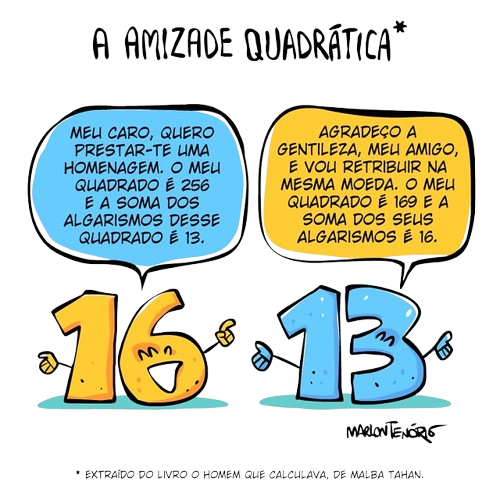

Desafio 2 - Amizade Qudrática

Após chegar ao palácio do vizir, o calculista foi desafiado a contar camelos. Ele sugeriu reduzir de 257 para 256, explicando que a raiz quadrada de 256 é 16 e a soma dos algarismos de 13 (cujo quadrado é 169) também resulta em 16, formando uma "amizade quadrática". Por isso, ele diminuiu um camelo da oferta para sua pretendente.